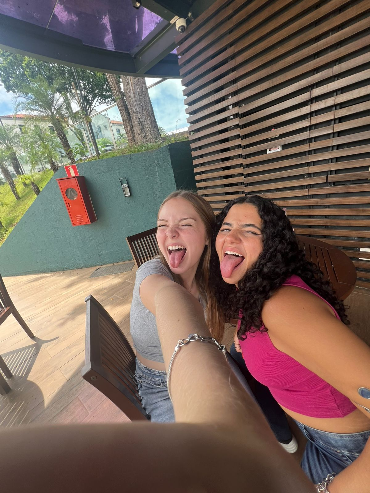
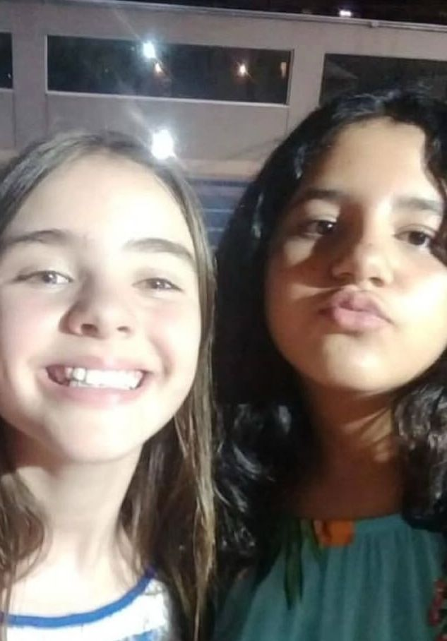
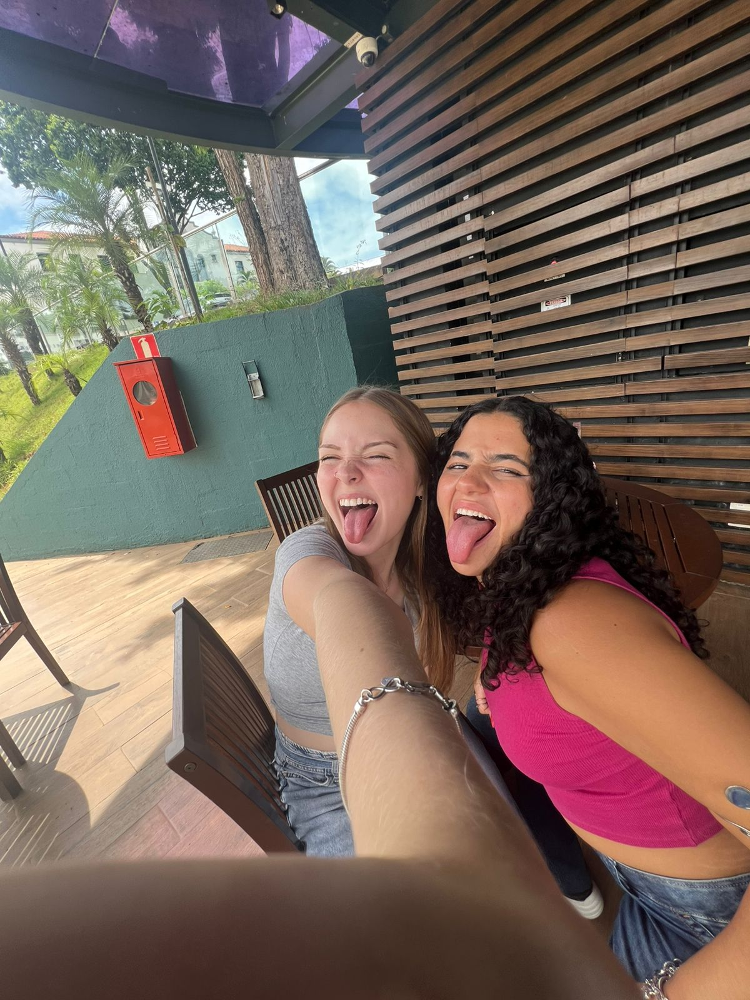
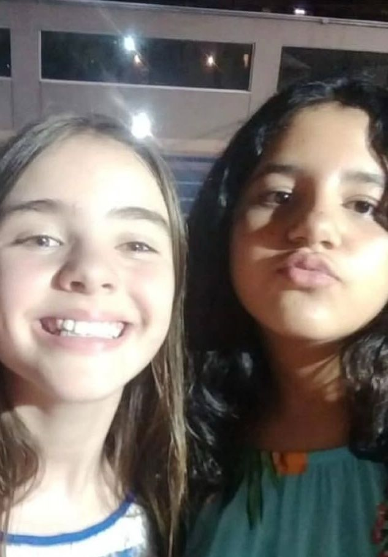
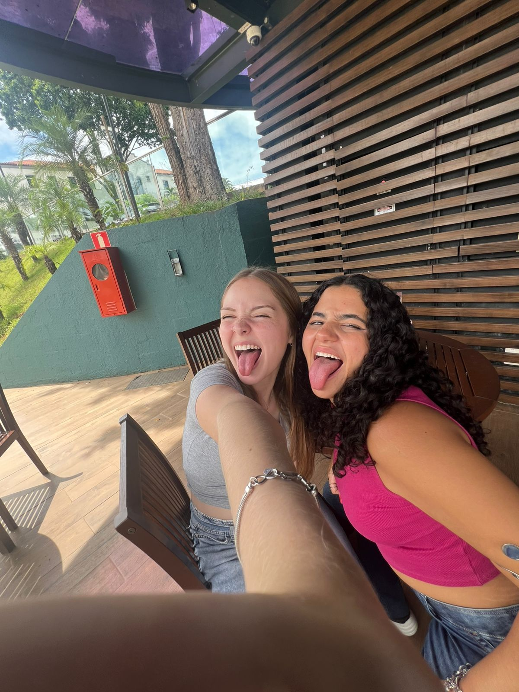
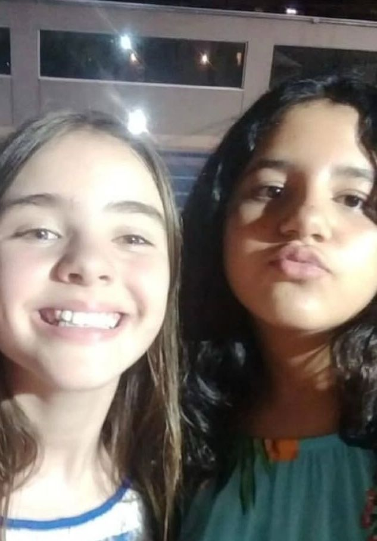
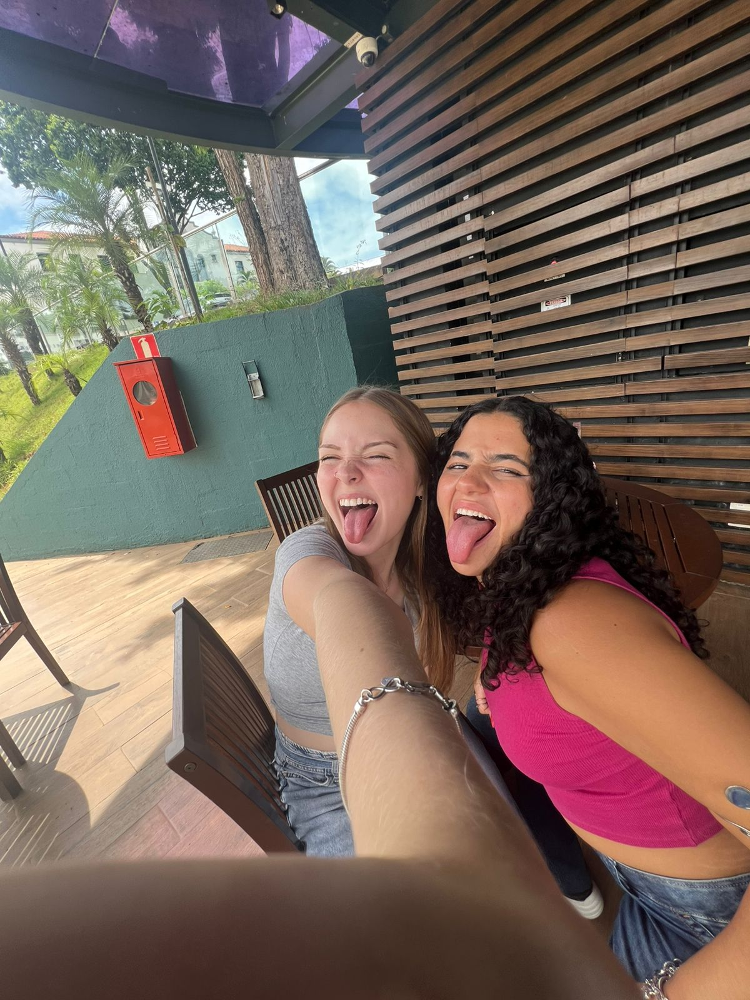
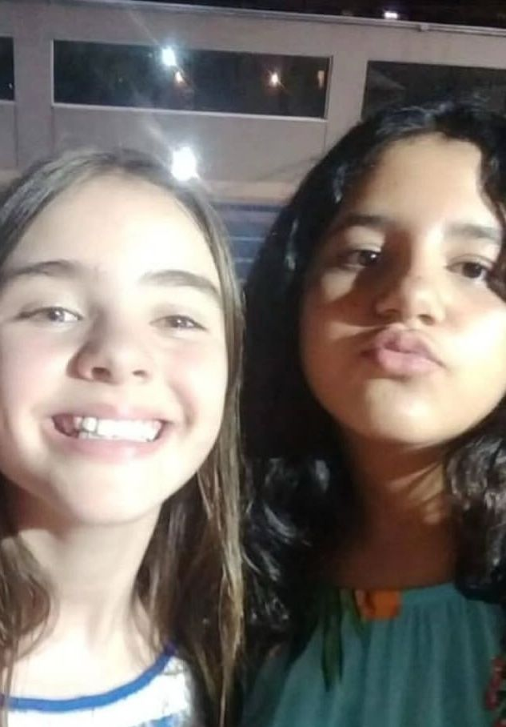

Álbum de fotos
 







É o famoso "Se tem Sabrina, tem Sâmia" né? Por mais que fisicamente as duas não tenham nada a ver, a nossa cacheada preferida adora a Ipanema Brina! E pra nossa amizade, "you´re probably with that blonde girl" nunca foi tão real né?
Gente, mas ela sabe fazer tudooo? A nossa diva faz o possível e o impossível no pole. Inclusive, aguardamos as juno poses tá??
Além de saber tudo sobre todas as fofocas, a nossa diva também é a informante oficinal do met gala, oscar e todos os programas. Ninguém sabe como ela!!
Por mais que eu não saiba nada sobre esse tema, não pude deixar de colocar! Então finge que aqui ta uma descrição muito foda
Oieeee Não sou muito boa com textinhos… mas vamos lá Oi Samichas! 18 anos não é coisa boba né? É um momento de responsabilidade e compromisso… Hoje é um dia especial, no qual você inicia um ciclo e termina outro. Ah para, essa mensagem ta chata demais! Você já deve ter escutado isso milhares de vezes. Vamos fazer algo diferente? Então hoje eu venho aqui, não pra te mostrar o que vai vir pela frente, mas sim o que já veio. Até porque, não vai ser um ciclo encerrado que vai fazer nossa amizade encerrar também. Vamos começar beeem lá de trás. Imagina essa cena: Colégio São Paulo, lá pra 2018. A gente no recreio tirando fotos bobas e falando de musically. Lá, eu não fazia ideia de que um dia você significaria tanto pra mim. Pra ser bem honesta, acho que não tem tanto tempo assim que a gente realmente se aproximou. Em 2020 por exemplo, por mais que a gente estudasse juntas, a gente não era tão próximas (o que é uma pena porque a pandemia teria sido muito mais divertida jogando minecraft e dress to impress com você). Na minha opinião, o que pra muita gente seria um divisor de amizades, pra gente foi exatamente o contrário: eu ter mudado de escola. Por mais que a gente não se veja muito e que eu tenha uns 10% de culpa nisso… Tá boooom, uns 90% de culpa nisso, a minha mudança de escola nos aproximou demais, porque começamos a valorizar conversas e momentos. E aí que entram as sleepovers, dias de jacuzzi, cafés e dates, vindas na piscina e todas as mil conversas, opiniões e risadas que eu tenho sempre o prazer de compartilhar com você. Espero que daqui a alguns anos eu possa atualizar essa mini linha do tempo com mais mil fases e mil ciclos que permanecemos juntas. Obrigada pela sua amizade. Acha que acabou? Lógico que não! Afinal, momentos bons não chegam nem perto de te descrever. Mas então o que chega? Eu poderia falar mil características diferentes suas como diva do pole dance, carpenter, militante do tiktok e twitter ou até choquei versão humana. Poderia falar também sobre como você é doce, educada, a mais engraçada de todas, animada, dinâmica e sincera. E também poderia falar o quanto eu gosto da nossa amizade. Mas nada disso seria suficiente pra poder te descrever por inteiro. Até porque, você é única. E olha que eu já tentei, mas ainda não achei palavras que te descrevam por completo. Você é um presente que a vida me deu e que eu vou segurar bem forte, porque, convenhamos, achar alguém como você não é fácil. Então, nesse dia especial, só queria te lembrar o quanto você é incrível e o quanto eu sou grata por ter você na minha vida. Que esse novo ciclo te traga tudo de bom (e muitos memes pra gente rir depois). Feliz aniversário, Samichas! Te amo, viu?